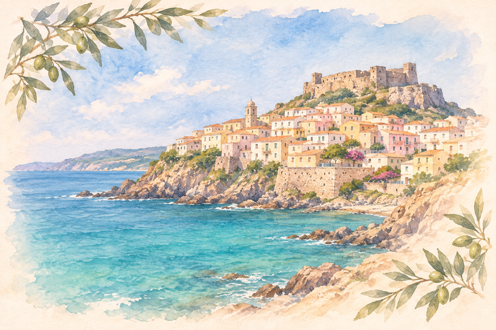

Die Hochzeit von
Loris & Mariana
Sardinien, Italien
Liebe Familie, liebe Freunde,
Wir würden diesen Tag sehr gerne mit euch feiern.
Loris & Mariana
Vier Länder, eine Geschichte
Venezuela · Kolumbien · Italien · Deutschland

Beispieltext
In dieser Version ihrer Geschichte lernten sich Loris und Mariana bei einem Abendessen kennen, das dauerte, bis das Licht ausging. Sie sprachen über Familienrezepte und Orte, die sie besuchen wollten. Noch vor dem Abschied verabredeten sie sich wieder.
Ihre Wurzeln in Venezuela, Kolumbien, Italien und Deutschland fanden ihren Platz in langen Gesprächen am Tisch, in geliehenen Worten und auf Reisen zu ihren Familien. Jetzt stellen sie sich eine Tafel auf Sardinien vor, mit dem Meer in der Nähe und all diesen Stimmen durcheinander.


Tag und Ort
Noch
Trauung
Ort folgt
Empfang
Ort folgt
Dress Code
Cocktailkleidung

Für ein harmonisches Gesamtbild unserer Feier bitten wir euch, bei eurer Kleidung auf die Farbe Blau zu verzichten.
Was kann man auf Sardinien unternehmen?

Alghero
Spaziere durch Algheros Altstadt und an der Stadtmauer entlang.
Castelsardo
Besuche die Burg der Doria und den Strand von Lu Bagnu.
La Maddalena
Nimm dir einen Tag für die Inselgruppe. Prüfe vorher die Fährverbindungen ab Palau.
Prüfe vor der Unterkunftsbuchung die Fahrtzeiten. Nimm für den Abend etwas Warmes mit.


Geschenke
Deine Anwesenheit ist das schönste Geschenk. Wenn du uns etwas mitbringen möchtest, sollte es in einen Koffer passen.
Bist du dabei?
Bitte bis zum 31. Dezember 2026 antworten